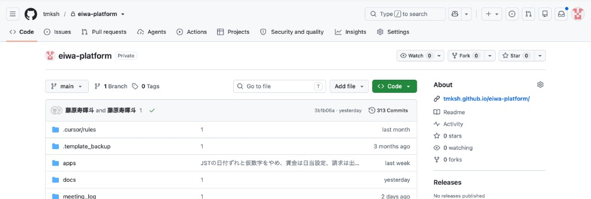
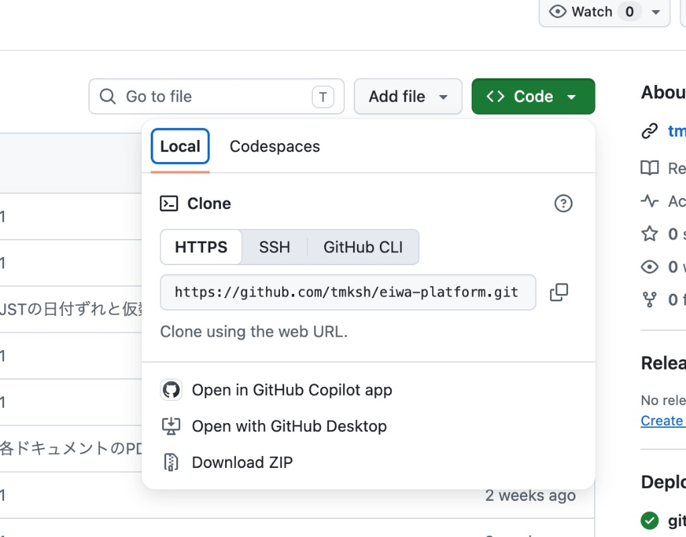
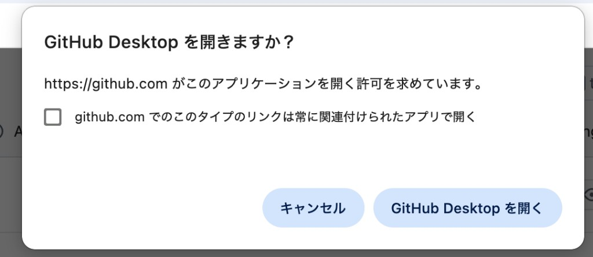

GitHub
クラウド上のコード保管庫です。バックアップと、チームでの共同作業に使います。
ひとことで言うと
GitHubは、案件のファイル一式をインターネット上に置いておく場所です。お客様には「コードの保管庫です。バックアップと、複数人で作業するために使っています」と説明します。
ここが「正しい最新版」です。自分のPCの中身と食い違ったときは、GitHub側を基準に考えます。
GitHubを普段ブラウザで触る機会は多くありません。日々の送受信は GitHub Desktop で完結します。GitHubを開くのは、履歴を見るとき、設定を変えるとき、公開URLを確認するときです。
覚えておく言葉
| 言葉 | 意味 |
|---|---|
| リポジトリ（repository） | この案件のファイル一式。案件ごとに1つ作る「レポジトリ」「リポ」とも呼びます |
| ブランチ（branch） | 作業の枝分かれ。main が本番につながる幹小さい案件は main だけで進めます |
| コミット履歴 | 誰がいつ何を直したかの一覧。ここから過去の状態に戻せる |
| プルリクエスト | 「この変更を幹に入れてよいか」のレビュー依頼複数人で作る案件で使います |
| Private / Public | リポジトリを社外から見られるかどうか。案件は原則 Private |
よく使う画面
Code
ファイル一式が並ぶ、いちばん最初の画面です。
- 今クラウドにある最新の状態が見られる
- ファイル名をクリックすると中身が読める
- お客様に共有するのはこの画面ではありません
GitHub Desktopにクローンする
別のPCで作業するときや、初めて案件のファイルを自分のPCに取るときは、ブラウザのGitHubから GitHub Desktop にクローンします。クローン＝クラウドのファイル一式を、自分のPCにコピーすることです。
- リポジトリの画面で、緑の Code ボタンを押す。
- Open with GitHub Desktop を選ぶ。
- 「GitHub Desktop を開きますか？」と出たら、GitHub Desktop を開く を押す。
- GitHub Desktopが開いたら、保存先のフォルダを確認してクローンする。
- クローンが終わったら、Open in Cursor を押して編集を始める。



すでに同じフォルダをクローンしている場合は、もう一度やらず、GitHub Desktopでそのリポジトリを開きます。二重に取ると、どちらが最新か分からなくなります。
GitHub Pagesで見せる
要件定義や機能一覧は、ファイルを送らずGitHub Pagesで公開します。URLを送るだけで、いつでも最新版が見られます。案件の進め方としては 02 要件定義 でも同じ手順を使います。
- リポジトリの Settings を開き、左メニューの Pages を選ぶ。
- Build and deployment の Source を決める。公開に使うブランチとフォルダ（
mainの/docsなど）があるなら Deploy from a branch、無いなら GitHub Actions を選ぶ。 - Cursor でページを作って、コミット・プッシュする。デプロイが終わると反映される。
- Pages画面の上に出ている Your site is live at … のURLが公開先。これをお客様に送る。


リポジトリが Private でも、GitHub Pagesで公開したページは誰でも見られます。お客様の実名データ、ID、パスワード、社内金額は載せません。見せたくないものは、この工程の紙（社内用）に置いておきます。
やってはいけないこと
| これをすると | こうなる |
|---|---|
| パスワードやAPIキーを含むファイルを送る | 後で消しても履歴から取り出せる。鍵の作り直しが必要になる |
| リポジトリを Public にする | お客様のコードが社外から読める状態になる |
| ブラウザ上で直接ファイルを編集する | 自分のPC側と食い違い、次のプッシュで衝突する |
| 案件が終わったリポジトリを削除する | 保守で戻すときに履歴がない。残したまま扱う |
次に進む合図
- プッシュした内容がGitHub上でも見えている
- リポジトリが Private になっている
- 鍵やパスワードが含まれていない